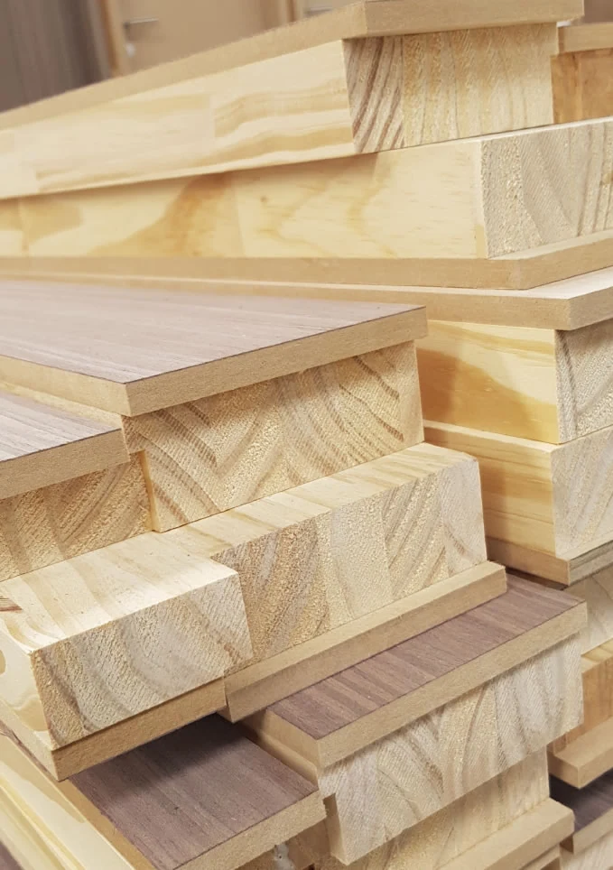
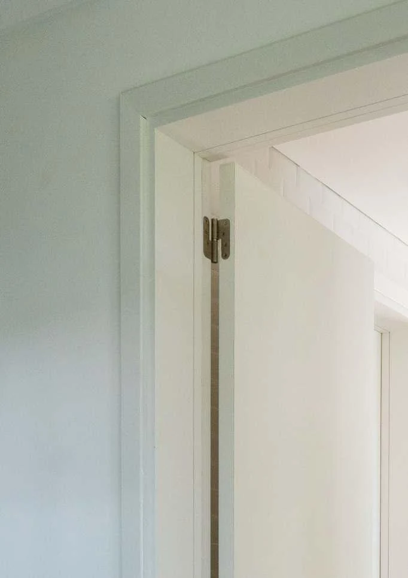
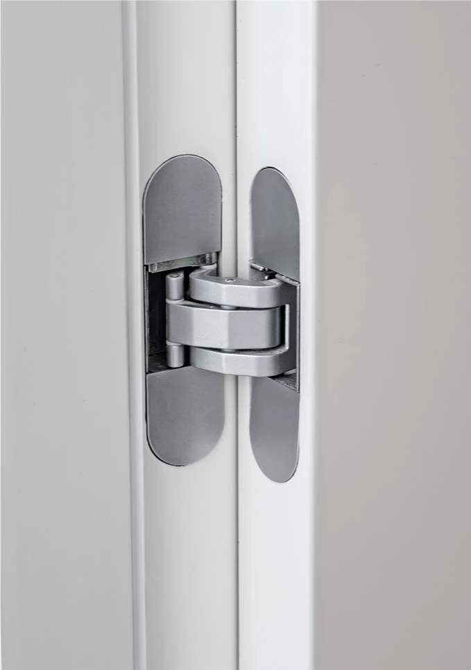

La diferencia
está en lo que elegís.
Una puerta reúne textura, estructura y movimiento. Conocé las decisiones que le dan forma.

La materia
da carácter.
Madera maciza
La propia madera conforma las piezas. Burdeos ofrece nogal con recubrimiento poliuretánico al agua, sin teñir.
Enchapados
Una chapa de madera define la superficie. Placa enchapada y Aldeana ofrecen opciones de madera natural y reconstituida.
Foliados
Una terminación superficial disponible en roble, nogal o blanco en la línea Placa foliada.
Pintados
Las fichas Placa y Aldeana incluyen blanco. Burdeos suma gris, negro, rosa y verde, con lacas al agua.

La puerta también
es su encuentro.
Buña filo interior, filo muro, buña filo exterior y marco con contramarco: cada sistema tiene su resolución y sus propias dimensiones.
Elegí el sistema junto con la puerta y verificá las condiciones de obra antes de definir las medidas.
Conocé los cuatro sistemas
Detalles que
se sienten al usar.
Bisagras y cierre magnético
Las fichas de marcos muestran bisagras ocultas, opciones en acero inoxidable y cerraduras magnéticas con llave, para baño o con cilindro.
Burletes
Los sistemas documentados incorporan burletes de EPDM en blanco o marrón.
Componentes según la altura
Las fichas indican enderezador para alturas mayores a 2400 mm. Revisá el detalle del sistema que estás considerando.